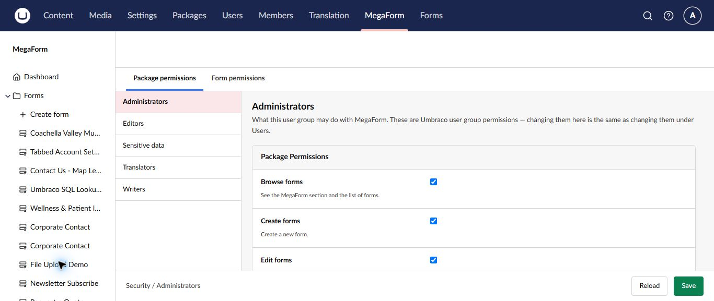

Manage MegaForm security on Umbraco
MegaForm maps backoffice capabilities to Umbraco user groups. Use Security to decide which groups may browse, create, edit, publish, and administer forms or submissions.

Configure group permissions
- Select MegaForm → Security.
- Choose an Umbraco user group, such as Administrators, Editors, or Translators.
- Review Package permissions and Form permissions.
- Enable only the capabilities required by that group's job.
- Select Save.
Changing a permission here is the same as changing the corresponding MegaForm permission for that Umbraco user group.
Suggested separation of duties
| Responsibility | Typical access |
|---|---|
| Form author | Browse, create, and edit assigned forms |
| Publisher | Review and publish approved forms |
| Submission team | Read or process entries for assigned forms |
| Translator | Maintain approved language content |
| Administrator | Configure package settings, data sources, security, and licensing |
Use Form permissions when a group should work with some forms but not all forms. Treat sensitive forms separately from ordinary contact or newsletter forms.
Security checklist
- Follow least privilege and review access regularly.
- Restrict submission data to groups with a clear business need.
- Test permissions with a non-administrator account.
- Remove access when responsibilities change.
- Limit who may edit workflows, data sources, payment settings, and storage settings.
- Avoid collecting sensitive information unless it is necessary and protected by an appropriate retention policy.
Important
Administrator access can hide permission mistakes during testing. Always verify the intended editor or submission-user experience with an account in the target Umbraco group.